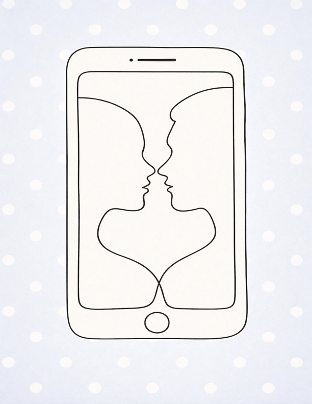

Every building you enter, every cafe you go to, you are surrounded by a sea of faces but not by their attention. The eyes that could meet yours are instead collectively looking down at the glowing screens in their hands. Although Gen Z students are considered the most interconnected generation in human history, capable of reaching hundreds in a click, we often neglect the person right in front of us.
Social media has given us more of a leeway to crave social connection. The Social Brain hypothesis claims that primate brains developed to be larger than all other vertebrates to meet the cognitive demands required in a group of several individuals (Dunbar, 2009). The advantages of remaining in a group include gained safety from predators, shared care of offspring, stronger ability to defend resources, and many more.
Biologically, this translates into the human need to belong and our motivation for inclusion. When we feel exclusion or rejection from a group, or in modern terms, “FOMO” (fear of missing out), we experience a pain that activates the same neural substrates as physical pain: the dorsal anterior cingulate cortex (dACC) and the anterior insula (Chester et al., 2016). These regions are critical components of the brain’s “salience network,” which organizes emotionally significant events (Sherman et al., 2018). Much like how physical pain signals humans to tend to the wound, social “pain” motivates behaviors that repair broken connections. When an individual succeeds in this reconnection and feels socially accepted, activity increases in these very same regions of the dACC and the anterior insula.
Understanding the role social media plays in fulfilling one’s craving for social connection is critical to utilizing digital connections meaningfully. The same brain regions that are activated for social pain and social reconnection are activated when we process the salience of others’ judgments of ourselves, thus supporting the claim that these regions are not specific to social pain, but social evaluations of “self” (Perini et al., 2018). Ultimately, we activate these neural pathways whenever we use social media to gauge how others judge us based on our posts (Sherman et al., 2018).
However, despite social media’s power in enabling social connection and self-judgment, we face a biological limit. Dunbar, the same researcher who proposed the social brain hypothesis, theorizes that we can only maintain about 150 meaningful relationships. Social media may trick us into surpassing this “limit,” but our brains cannot handle the load, which leads to shallow connections.
But we can be mindful of this. By understanding that social rejection is parallel to physical pain, it becomes clear why it is so easy to depend on social media; it gives us these small hits of dopamine from notifications that mimic social acceptance. Still, we remain socially malnourished in terms of deep, true connections. It is said that with real-time conversations, the rewards that occur in our brain are immediate and predictable, while with social media, there is a delay in reward (Clerke et al., 2022). With real face-to-face interactions, we can experience deeper and more rewarding social processing, and ultimately, true connection.
The solution for the disparity in our rewards system that social media has created may be closer to us than we realize. So, the next time you find yourself in a cafe surrounded by that sea of faces, try an experiment: put your screen down. The profound connection your evolved brain is craving isn’t in the blue light emitted by your screen, but in the eyes of the person sitting right in front of you.
Citations
Chester, D. S., DeWall, C. N., & Pond, R. S., Jr. (2016). The push of social pain: Does rejection’s sting motivate subsequent social reconnection? Cognitive, Affective, & Behavioral Neuroscience, 16(3), 541–550. https://doi.org/10.3758/s13415-016-0412-9
Clerke, A. S., & Heerey, E. A. (2023). The impact of social media salience on the subjective value of social cues. Social Psychological and Personality Science, 14(6), 669–678. https://doi.org/10.1177/19485506221130176
Dunbar, R. I. M. (2009). The social brain hypothesis and its implications for social evolution. Annals of Human Biology, 36(5), 562–572. https://doi.org/10.1080/03014460902960289
Perini, I., Gustafsson, P. A., Hamilton, J. P., Kämpe, R., Zetterqvist, M., & Heilig, M. (2018). The salience of self, not social pain, is encoded by dorsal anterior cingulate and insula. Scientific Reports, 8, Article 6165. https://doi.org/10.1038/s41598-018-24658-8
Sherman, L. E., Hernandez, L. M., Greenfield, P. M., & Dapretto, M. (2018). What the brain 'Likes': Neural correlates of providing feedback on social media. Social Cognitive and Affective Neuroscience, 13(7), 699–707. https://doi.org/10.1093/scan/nsy051